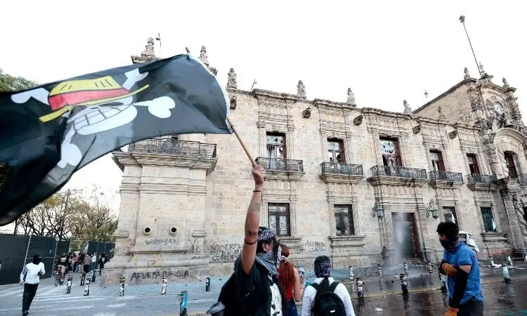

Clashes erupt in Mexico City anti-crime protests, injuring 120

MEXICO CITY, Nov 16, 2025 (BSS/AFP) - More than 100 people were injured and 20 arrested during a massive protest on Saturday in Mexico City against the president's handling of violent crime, local government officials said. Thousands marched on the capital's historic main public square, the Zocalo, in a demonstration fueled by young Mexicans with ties to a global wave of Generation Z protests as well as supporters of the domestic "Sombrero Movement," which emerged after the recent assassination of a mayor known for his fight against organized crime. AFP observed participants of all ages taking part in the rally in front of the National Palace, where President Claudia Sheinbaum lives and works. Several protesters, some wearing balaclavas, toppled the metal barriers protecting the palace and threw paving stones at riot police, who responded with tear gas, according to AFP journalists.